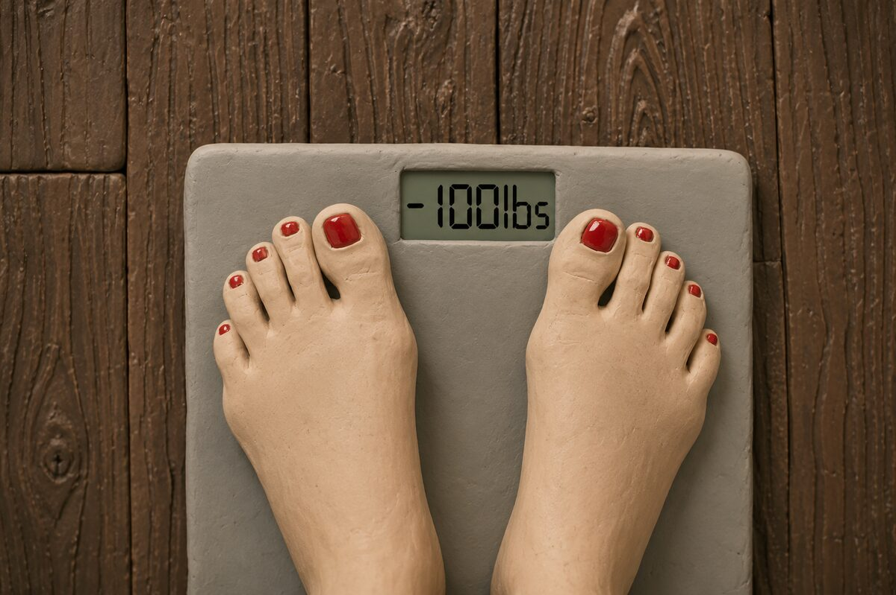
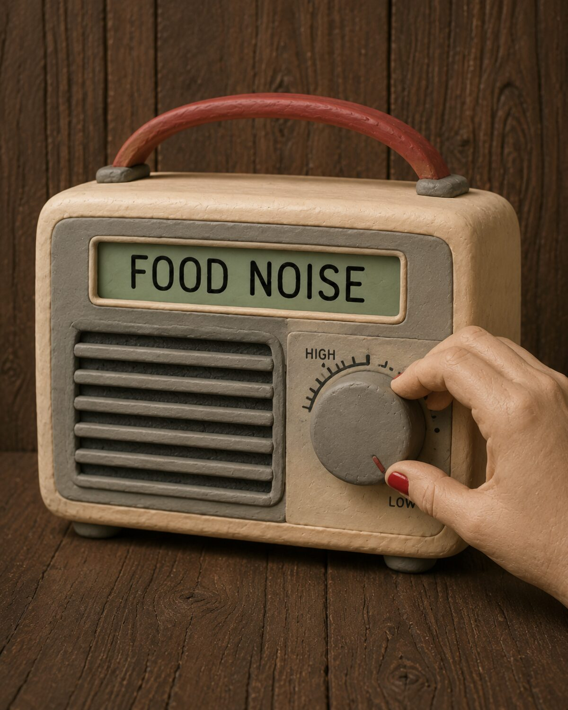
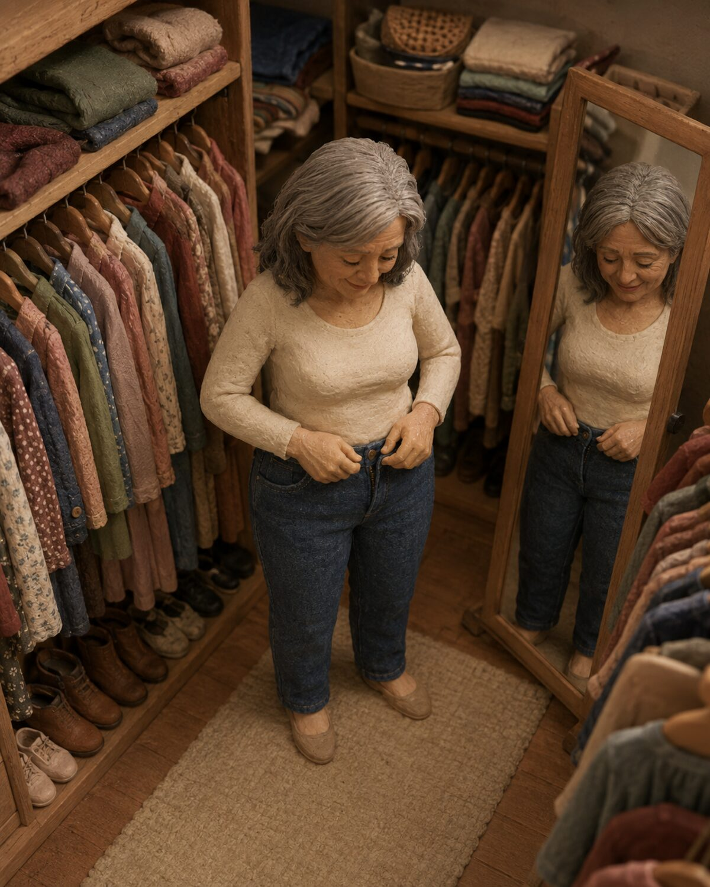

Eleven months, one protocol built for women, and the first time in years my body stopped working against me.

The version of me that finally felt familiar again.
I used to keep a quiet running list of every pair of jeans that no longer zipped. At 245 pounds and 49 years old, the list became quite long. The scale wasn’t even the worst part. It was the way my body had started working against me.
The midsection weight that showed up without permission, the guilt at looking in the mirror before I went out, the afternoon fog that clouded my brain and made me crash.
I had already done the “right” things. Clean eating. More Pilates. Better sleep hygiene. Cutting the wine.
Nothing moved the needle the way it used to in my thirties.
My doctor said it was normal for my age. But I was not ready to accept that answer. It felt like my friends ate whatever... whenever. But nothing ever changed. They always stayed skinny.
You’ve probably seen the before-and-afters. Women my age who somehow look sharper, lighter, more themselves again. I used to scroll past them with a mix of hope and skepticism.
Most of what I found about the new peptides felt written for men in a gym or for hardcore biohackers. Needles. Stacks. Language that made me feel like it was taking hardcore steroids.
But... I decided to try them out.
I tried a few different suppliers. They left bumps on the injection site. Some didn’t even work. I even tried the GLP-1 and still didn’t get the job done.
My butt got flabby, I was eating the same as before, and I fell into a hole of hopelessness...
Then I found bhare. It was the first source that was actually built for women like me. Clean, premium and no bs.
Just third-party tested compounds and a process that didn’t require me to become someone else.
I ordered. I decided to treat the next eleven months like an experiment I was willing to document honestly. This is what happened.
The food noise turned down. Not necessarily overnight but more like someone slowly lowered the volume on a radio that had been playing for years.
The constant pull toward sweets faded. I stopped reaching for Diet Coke out of habit to curb my hunger. Stopped waiting for the clock to hit 8am, 12pm, and 5pm just so I could eat. I would sit down to a normal plate and feel satisfied halfway through.
For the first time in a long time, stopping felt natural instead of like willpower.
The surprising part was the energy. Every extreme diet I had ever tried left me drained and irritable by week two. This was the opposite. I felt more steady, more clear, more capable than I had in years.

The first weeks felt less like restriction and more like the volume simply got quieter.
Around month four the first pair of old jeans zipped without a fight. That moment felt bigger than any number on the scale.
Then it became a pattern... shirts that hung differently, dresses I had pushed to the back of the closet, the simple pleasure of buying something new without automatically sizing up “just in case.”
The mirror changed more slowly, but it changed. One morning I caught my reflection while getting ready and didn’t automatically look away. That quiet confidence started showing up in other places too.
In how I carried myself in conversations, in how I felt walking into a room, in the way I stopped editing myself before speaking to men I found interesting.
And best of all... sex.
Feeling comfortable being fully seen, without the mental inventory of what I wished looked different. That particular confidence is hard to put a number on, but it may have been the most valuable part of the whole year.

The version of confidence that doesn’t need to announce itself.
I went from 245 to 145 over eleven months. 100 pounds.
The clothes fit. The mirror felt familiar. The conversations felt easier. The intimacy felt freer.
Is this effortless? No. It is not cheap. I tracked every order and the total over eleven months was real money. There were weeks I questioned whether I was being ridiculous. There were plateaus that tested my patience. Nothing about this was magic.
But here’s the calculation I kept coming back to: if there is a price I can put on feeling like myself again, on the confidence that showed up in the mirror, in clothes, in conversations, and in my own skin...
I am willing to pay that ten times over.
For me, it was worth it.
And the landscape in 2026 is honestly strange. Most of what I found was either written for men, wrapped in biohacker language, or sold with zero transparency. Then there’s this:
| Source | Feels built for women | Transparency |
|---|---|---|
| Typical peptide sites | No — mostly male / gym framing | Often unclear |
| Clinical / compounding routes | Sometimes | Varies widely |
| bhare GLP-3 RT | Yes | Third-party tested · COA |
— Skye, who can finally look in the mirror without flinching
Everything from this review, in one place — built for researchers who refuse to compromise.
Research-grade. Third-party tested. No bravado required.